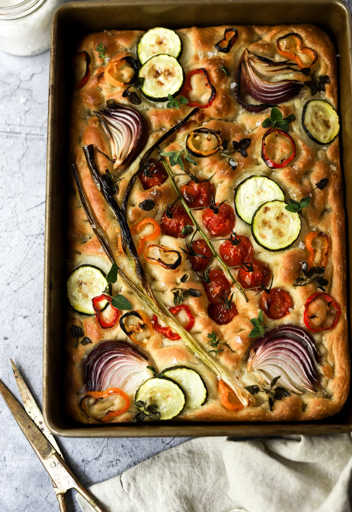

Focaccia Recipe

About the dish:
Focaccia is a traditional Italian flatbread that is often served as a side dish or used for sandwiches. It has a distinctive dimpled surface and is typically topped with olive oil, salt, and herbs.
Ingredients:
- 3 cups all-purpose flour
- 1 teaspoon active dry yeast
- 1 teaspoon salt
- 1 cup warm water
- 1/4 cup olive oil
- 1 teaspoon dried oregano
- 1 teaspoon dried basil
- 1/2 teaspoon garlic powder
Instructions:
- In a large bowl, combine the flour, yeast, and salt.
- Add the warm water and olive oil, and mix until a dough forms.
- Knead the dough on a floured surface for about 10 minutes until smooth and elastic.
- Place the dough in a greased bowl, cover with a damp cloth, and let it rise for 1 hour or until doubled in size.
- Preheat the oven to 425°F (220°C).
- Punch down the dough and transfer it to a greased baking sheet.
- Use your fingers to press down on the dough, creating dimples.
- Drizzle with olive oil and sprinkle with salt, oregano, basil, and garlic powder.
- Bake for 15-20 minutes or until golden brown.
- Let cool before slicing and serving.
Home